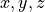

Lezione 9 - Python: Statement Complessi (1)¶
Codice condizionale: if¶
if/elif/else (se/altrimenti-se/altrimenti) permettono di
scrivere codice che viene eseguito solo se una condizione e’ soddisfatta:
if condizione:
print("la condizione e' vera")
oppure di gestire separatamente i due casi soddisfatta/non soddisfatta:
if condizione:
print("la condizione e' vera")
else:
print("la condizione e' falsa")
oppure n casi diversi:
if condizione_1:
print("la prima condizione e' vera")
elif condizione_2:
print("la seconda condizione e' vera")
elif condizione_3:
print("la terza condizione e' vera")
else:
print("nessuna condizione e' vera")
L’if, gli elif e l’else formano una “catena”: sono mutualmente
esclusivi, solo uno tra loro viene eseguito!
Esempio. Il codice in un elif ed else e’ mutualmente
esclusivo con quello dei vari if ed elif che lo precedono.
Ad esempio, supponiamo di avere due variabili Boolean c1 e c2.
Guardiamo in dettaglio in che caso vengono eseguite le varie righe di codice
nell’ultimo esempio:
# c1 c2 | c1 c2 | c1 c2 | c1 c2
# True True | True False | False True | False False
# ----------|------------|------------|------------
print("inizio") # si | si | si | si
if c1: # si | si | si | si
print("1") # si | si | no | no
elif c2: # no | no | si | si
print("2") # no | no | si | no
else: # no | no | no | si
print("0") # no | no | no | si
print("fine") # si | si | si | si
E’ chiaro che se c1 e’ vera, il valore di c2 (ed il corrispondente
elif c2) non influenza il comportamento del programma: se l’if viene
eseguito (cioe’ se c1 e’ vera) gli elif ed else successivi non
vengono neanche considerati!
Supponiamo di voler stampare "1" se c1 e’ vera, ed anche "2" se
c2 e’ vera – in modo del tutto indipendente. Posso fare cosi’:
print("inizio")
if c1:
print("1")
if c2:
print("2")
if not c1 and not c2:
print("0")
print("fine")
Qui gli if non formano una “catena”: sono indipendenti l’uno dall’altro!
Esempio. Python usa l’indentazione per decidere quale codice fa parte
dell’if e quale no.
Scrivo un programma Python per testare se l’utente e’ un telepate:
print("sto pensando ad un numero tra 1 e 10...")
telepate = int(input("qual'e'? ")) == 72
print("sto calcolando...")
if telepate:
print("DING DING DING DING!")
print("COMPLIMENTI!")
print("sei un telepate certificato!")
else:
print("grazie per aver giocato")
print("riprova di nuovo")
print("fine.")
Come si vede eseguendo l’esempio con l’interprete, Python considera dentro
l’if tutti i print() indentati.
Esempio. Questo codice apre un file e controlla (i) se e’ vuoto, e (ii)
se contiene intestazioni (righe che cominciano per ">"), reagendo di
conseguenza:
print("comincio...")
righe = open("data/prot-fasta/1A3A.fasta").readlines()
if len(righe) == 0:
print("il file FASTA e' vuoto")
else:
primi_caratteri_di_ogni_riga = [riga[0] for riga in righe]
if not (">" in primi_caratteri_di_ogni_riga):
print("il file FASTA non e' valido")
else:
print("il file FASTA e' valido")
print("fatto!")
Quiz:
E’ possibile che il codice stampi sia che il file e’ vuoto, sia che e’ valido?
E’ possibile che il codice non stampi
"comincio..."o"fatto!"?Se il file e’ effettivamente vuoto, quando Python esegue la riga
print("fatto!"), che valore ha la variabileprimi_caratteri_di_ogni_riga?Posso semplificare il codice usando
elif?
Esercizi¶
Warning
Non dimenticate i due punti!
Se provo a scrivere un if e dimentico i due punti, es.:
>>> condizione = input("Dimmi si: ") == "si"
>>> if condizione
appena premo invio, Python mi dice che la sintassi e’ errata:
File "<stdin>", line 1
if condizione
^
SyntaxError: invalid syntax
e si rifiuta di eseguire il codice. Quindi e’ facile riconoscere l’errore.
Warning
State attenti all’indentazione!
Sbagliare l’indentazione modifica il comportamento del programma senza pero’ renderlo necessariamente invalido.
In alcuni casi e’ facile capire cosa sta succedendo, es.:
>>> condizione = input("Dimmi si: ") == "si"
>>> if condizione:
>>> print("hai detto:")
>>> print("si")
Python da’ errore immediatamente:
File "<stdin>", line 4
print("si")
^
IndentationError: unexpected indent
In altri invece l’errore e’ molto piu’ sottile. Vedi sezione su codice annidato.
Chiedere all’utente un numero con
input(). Se il numero e’ pari, stampare"pari"a schermo, se e’ dispari, stampare"dispari".Hint.
input()restituisce sempre una stringa.Chiedere all’utente un numero razionale. Se il numero e’ nell’intervallo
![[-1,1]](_images/math/3e79b1d96f80fc611bf0f46645d37cc33614879f.png) , stampare
, stampare "okay", altrimenti non stampare niente.Hint. E’ necessario usare
elif/else?Chiedere all’utente due numeri interi. Se il primo e’ maggiore del secondo, stampare
"primo", se il secondo e’ maggiore del primo stampare"secondo", altrimenti stampare"nessuno dei due".Dato il dizionario:
oroscopo_di = { "gennaio": "fortuna estrema", "febbraio": "fortuna galattica", "marzo": "fortuna incredibile", "aprile": "ultra-fortuna", }
chiedere all’utente il suo mese di nascita. Se il mese appare come chiave nel dizionario
oroscopo_di, stampare a schermo il valore corrispondente. Altrimenti stampare"non disponibile".Hint. Per controllare se una chiave appare in un dizionario si puo’ usare
key in dict.Chiedere all’utente il percorso ad un file e leggere i contenuti del file con il metodo
readlines(). Poi stampare:Se il file e’ vuoto, la stringa
"vuoto"Se il file ha meno di 100 righe,
"piccolo"e il numero di righe.Se il file ha tra le 100 e le 1000 righe,
"medio"e il numero di righe.Altrimenti,
"grande"e il numero di righe.
La risposta deve essere stampata su una sola riga.
Chiedere all’utente due triplette di razionali (usando due chiamate a
input()). Le due triplette rappresentano due punti nello spazio tridimensionale (tre coordinate  a testa).Se tutte le coordinate sono non-negative, stampare a schermo la distanza Euclidea dei due punti.
Hint: la distanza Euclidea e’

E’ possibile che questo codice:
numero = int(input("scrivi un numero: ")) if numero % 3 == 0: print("divide 3!") elif numero % 3 != 0: print("non divide 3!") else: print("boh")
stampi
"boh"?E’ possibile che questo codice:
numero = int(input("scrivi un numero: ")) if numero % 2 == 0: print("divide 2!") if numero % 3 == 0: print("divide 3!") if numero % 2 != 0 and numero % 3 != 0: print("boh")
stampi
"boh"?Chiedere all’utente se vuole eseguire una somma o un prodotto.
Se l’utente vuole eseguire una somma, chiedere due numeri, effettuare la somma, e stampare il risultato.
Idem se l’utente vuole eseguire un prodotto.
Se l’utente non risponde ne’
"somma"ne’"prodotto", non fare niente.
Codice iterativo: for¶
for permette di scrivere codice che viene ripetuto (una ed una sola volta)
per ciascun elemento di una collezione (stringa, lista, tupla, dizionario).
La sintassi di for e’:
collezione_di_oggetti = range(10) # ad esempio
for elemento in collezione_di_oggetti:
codice_che_fa_qualcosa_con_elemento(elemento)
Questo ciclo for esegue codice_che_fa_qualcosa_con_elemento() per
ciascun elemento in collezione_di_oggetti, in ordine dal primo all’ultimo.
elemento e’ una variabile Python che prende il valore di ciascun elemento
di collezione_di_oggetti, dal primo all’ultimo: viene “creata” sul momento
quando scriviamo il ciclo for.
Proprio come con le list comprehension, il nome che le diamo e’ arbitrario.
Warning
Se collezione_di_oggetti e’ un dizionario, for itera sulle chiavi.
Occhio che l’ordine delle chiavi in un dizionario non e’ ovvio. Si veda sopra la sezione sui dizionari.
Esempio. Questo ciclo for:
lista = [1, 25, 6, 27, 57, 12]
for numero in lista:
print(numero)
itera su tutti gli elementi del risultato di lista: prima l’elemento 1,
poi l’elemento 25, etc., fino a 12, e li stampa nell’ordine in
cui appaiono nella lista.
Ad ogni iterazione il valore dell’elemento corrente viene automaticamente
messo nella variabile numero, mentre il print ne stampa il valore.
Posso ottenere lo stesso comportamento anche senza il ciclo for, cosi’:
numero = lista[0] # prima iterazione
print(numero)
numero = lista[1] # seconda iterazione
print(numero)
numero = lista[2] # terza iterazione
print(numero)
# ...
numero = lista[5] # ultima iterazione
print(numero)
Il for permette di compattare questo codice in due sole righe.
Esempio. Piuttosto che stampare gli elementi della lista, voglio stampare la loro somma.
Modifico il for dell’esempio sopra:
lista = [1, 25, 6, 27, 57, 12]
somma = 0
for numero in lista:
somma = somma + numero
print("la somma e'", somma)
Ho creato una variabile di supporto somma che inizializzo a 0.
Poi scorro su tutti i numeri contenuti in lista, e man mano li aggiungo a
somma.
Una volta terminato il ciclo for, somma varra’ (per costruzione):
lista[0] + lista[1] + ... + lista[-1]
che e’ esattamente la somma degli elementi.
Esempio. Piuttosto che calcolare la somma degli elementi della lista, voglio trovare il massimo.
L’idea e’ questa:
Itero la lista con un
for.Creo una nuova variabile
massimo_fino_ad_orain cui memorizzo l’elemento piu’ grande che ho trovato fino ad ora. Il valore viene aggiornato ad ogni iterazione del ciclofor.Per ogni elemento della lista (cioe’ in ogni iterazione del
for) controllo se l’elemento che ho sotto mano e’ piu’ grande dimassimo_fino_ad_ora:Se non lo e’, non faccio niente.
Se lo e’, aggiorno
massimo_fino_ad_ora.
Quando il
foravra’ finito di scorrere sugli elementi della lista,massimo_fino_ad_oraconterra’ (suspance!) il massimo elemento trovato fino ad ora.
PROVATE VOI
Esempio. Data la seguente tabella (che potrebbe essere il risultato
di readlines() su un file):
tabella = [
"protein domain start end",
"YNL275W PF00955 236 498",
"YHR065C SM00490 335 416",
"YKL053C-A PF05254 5 72",
"YOR349W PANTHER 353 414",
]
voglio convertirla in un dizionario fatto cosi’:
dati = {
"YNL275W": ("PF00955", 236, 498),
"YHR065C": ("SM00490", 335, 416),
"YKL053C-A": ("PF05254", 5, 72),
"YOR349W": ("PANTHER", 353, 414)
}
che contiene per ogni dominio (riga) di tabella, esclusa l’intestazione,
come chiave la proteina corrispondente (prima colonna) e come valore le
informazioni associate (altre colonne: nome, inizio e fine del dominio).
PROVATE VOI
Esempio. break permette di interrompere il ciclo for. Ad
esempio:
percorso = input("scrivi un percorso a file: ")
righe = open(percorso).readlines()
for riga in righe:
riga = riga.strip()
print("ho letto:", riga)
if len(riga) == 0:
# se la riga e' vuota, esco dal ciclo
break
# <--- il break ci porta immediatamente QUI
legge le righe dal file indicato dall’utente, e le stampa una per una. Pero’
appena incontra una riga vuota (vedi l’if), esce dal ciclo.
Esempio. continue permette di passare all’iterazione successiva del
for. Ad esempio:
percorso = input("scrivi un percorso a file: ")
righe = open(percorso).readlines()
for riga in righe:
# <--- il continue ci riporta QUI, ma all'iterazione
# (e quindi all'elemento di righe) successivo
riga = riga.strip()
print("ho letto:", riga)
if riga[0] == ">":
print("intestazione")
continue
print("sequenza")
legge le righe del file indicato dall’utente, che supponiamo essere un
file fasta. Stampa ogni riga che incontra. Poi, se la riga e’ un’intestazione,
stampa "intestazione" ed il continue fa saltare a Python tutto cio’
che c’e’ tra il continue stesso e la fine dell’iterazione corrente del ciclo for.
In altre parole, salta all’iterazione successiva. Python riprende noncurante
l’esecuzione all’elemento successivo di righe, e riprende ad eseguire il
for.
Codice iterativo: while¶
while permette di scrivere codice che viene ripetuto finche’ una
condizione e’ vera.
La sintassi e’:
while condizione:
condizione = codice_che_fa_qualcosa_e_aggiorna_condizione()
Il codice all’interno del while viene ripetuto un numero indefinito
di volte: dipende da quanto ci mette condizione a diventare False.
Esempio. Scrivo un ciclo while che chiede all’utente se vuole
fermarsi, e continua a chiedere finche’ l’utente non risponde "si":
while input("vuoi che mi fermi? ") != "si":
print("se non rispondi 'si' non mi fermo!")
Esempio. Esattamente come con il for, posso usare continue e
break per alterare il flusso del ciclo. Ad esempio:
while True:
risposta = input("qual'e la capitale d'Italia? ")
if risposta.lower() == "roma":
print("giusto!")
break
print("riprova!")
# <--- il break ci porta QUI
print("finito")
questo codice continua a girare finche’ l’utente non risponde "roma" (con
maiuscole o minuscole, poco importa).
Riscrivo il ciclo per fare in modo che chieda all’utente se continuare o meno:
while True:
risposta = input("qual'e' la capitale d'Italia? ")
if risposta.lower() == "roma":
print("giusto!")
break # esce dal while
else:
print("doh!")
risposta = input("vuoi riprovare? ")
if risposta.lower() == "no":
print("va bene")
break # esce dal while
Esercizi¶
Scrivere un ciclo
forche:Stampi a schermo gli elementi di
range(10), uno per riga.Stampi a schermo il quadrato degli elementi di
range(10), uno per riga.Stampi a schermo la somma dei quadrati di
range(10).Stampi a schermo il prodotto degli elementi di
range(1,10).Dato il dizionario:
volume_di = { "A": 67.0, "C": 86.0, "D": 91.0, "E": 109.0, "F": 135.0, "G": 48.0, "H": 118.0, "I": 124.0, "K": 135.0, "L": 124.0, "M": 124.0, "N": 96.0, "P": 90.0, "Q": 114.0, "R": 148.0, "S": 73.0, "T": 93.0, "V": 105.0, "W": 163.0, "Y": 141.0, }
che codifica il volume di ciascun aminoacido, stampi a schermo la somma dei valori.
Dato il dizionario:
volume_di = { "A": 67.0, "C": 86.0, "D": 91.0, "E": 109.0, "F": 135.0, "G": 48.0, "H": 118.0, "I": 124.0, "K": 135.0, "L": 124.0, "M": 124.0, "N": 96.0, "P": 90.0, "Q": 114.0, "R": 148.0, "S": 73.0, "T": 93.0, "V": 105.0, "W": 163.0, "Y": 141.0, }
che codifica il volume di ciascun aminoacido, e la stringa FASTA:
fasta = """>1BA4:A|PDBID|CHAIN|SEQUENCE DAEFRHDSGYEVHHQKLVFFAEDVGSNKGAIIGLMVGGVV"""
stampi a schermo il volume totale della proteina (leggi: la somma dei volumi di tutti i suoi residui).
Hint. Prima conviene estrarre la sequenza vera e propria da
fasta, poi, per ciascun carattere nella sequenza (for carattere in sequenza) prendere dal dizionario il volume corrispondente e sommarlo al totale.Trovi il valore minimo della lista
[1, 25, 6, 27, 57, 12].Hint. Si veda l’esempio sopra in cui troviamo il massimo della lista. E’ sufficiente adattare la logica che decide quando aggiornare la variabile ausiliaria (e magari rinominarla da
massimo_fino_ad_oraaminimo_fino_ad_ora).Trovi sia il massimo che il minimo della lista
[1, 25, 6, 27, 57, 12].Hint. E’ necessario usare due variabili ausiliarie:
massimo_fino_ad_oraeminimo_fino_ad_ora.Data la sequenza nucleotidica:
sequenza = "ATGGCGCCCGAACAGGGA"
restituisca la lista di tutte le sue sotto-sequenze di tre nucleotidi. La soluzione deve essere:
["ATG", "GCG", "CCC", "GAA", "CAG", "GGA"]
Hint: conviene iterare sul risultato di
range(0, len(sequenza), 3)ed aggiungere man mano ogni tripletta ad una lista vuota preventivamente creata.Dato il testo (in formato FASTA):
testo = """>2HMI:A|PDBID|CHAIN|SEQUENCE PISPIETVPVKLKPGMDGPKVKQWPLTEEKIKALVEICTEMEKEGKISKI >2HMI:B|PDBID|CHAIN|SEQUENCE PISPIETVPVKLKPGMDGPKVKQWPLTEEKIKALVEICTEMEKEGKISKI >2HMI:C|PDBID|CHAIN|SEQUENCE DIQMTQTTSSLSASLGDRVTISCSASQDISSYLNWYQQKPEGTVKLLIYY >2HMI:D|PDBID|CHAIN|SEQUENCE QITLKESGPGIVQPSQPFRLTCTFSGFSLSTSGIGVTWIRQPSGKGLEWL >2HMI:E|PDBID|CHAIN|SEQUENCE ATGGCGCCCGAACAGGGAC >2HMI:F|PDBID|CHAIN|SEQUENCE GTCCCTGTTCGGGCGCCA"""
restituisca un dizionario
sequenza_diche abbia come chiavi i nomi delle sequenze cosi’ come sono scritti nelle intestazioni (il primo sara’2HMI:A, il secondo2HMI:B, etc.), e come valore la sequenza corrispondente.Il risultato dovra’ somigliare a questo:
sequenza_di = { "2HMI:A": "PISPIETVPVKLKPGMDGPKVKQW...", "2HMI:B": "PISPIETVPVKLKPGMDGPKVKQW...", # ... }
Hint. Conviene prima spezzare
testonelle sue righe. Poi si puo’ iterare sulle righe cosi’ ottenute: se una riga e’ di intestazione, mi salvo il nome della sequenza corrispondente; se la riga invece e’ una sequenza, aggiorno il dizionario con il nome ottenuto alla riga sopra e la sequenza ottenuta dalla riga corrente.
Scrivere un ciclo
whileche:Continui a chiedere all’utente di scrivere
"STOP". Se l’utente scrive"STOP"(in maiuscolo) termina, senno’ scrive all’utente"devi scriviere 'STOP'..."e continua.Come sopra, ma deve terminare anche se l’utente risponde
"stop"in minuscolo.
Che cosa stampa a schermo questo codice?
for numero in range(10): print("processo l'elemento", numero)
for numero in range(10): print("processo l'elemento", numero) break
for numero in range(10): print("processo l'elemento", numero) continue
for numero in range(10): print(numero) if numero % 2 == 0: break
for numero in range(10): if numero % 2 == 0: break print(numero)
condizione = False while condizione: print("la condizione e' vera")
condizione = False while condizione: print("la condizione e' vera") condizione = True
condizione = True while condizione: print("la condizione e' vera")
numeri = range(10) i = 0 while i < len(numeri): print("all'indice", i, "c'e' l'elemento", numeri[i]) i += 1
righe = [ "riga 1", "riga 2", "riga 3", "", "riga 5", "riga 6", ] for riga in righe: riga = riga.strip() if len(riga) == 0: break else: print("ho letto:", riga)
Data la tupla:
numeri = (0, 1, 1, 0, 0, 0, 1, 1, 2, 1, 2)
scrivere un ciclo che itera su
numeri, si ferma appena incontra il valore2e ne stampa a schermo la posizione.Data la tupla:
stringhe = ("000", "51", "51", "32", "57", "26")
scrivere un ciclo che itera su
stringhe, si ferma appena incontra una stringa che contiene un carattere"2", e stampa a schermo posizione e valore della stringa sulla quale si e’ fermato.La soluzione e’: posizione
4, valore"32".
Codice annidato¶
Posso combinare un numero arbitrario di statement complessi (if, for e
while) usando l’indentazione, inclusi cicli innestati.
Esempio. Voglio simulare un orologio che ha due lancette: ore e minuti:
for ora in range(24):
for minuto in range(1, 60+1):
print("ora =", ora, "minuro =", minuto)
Qui all’esterno itero sulle ore, mentre all’interno itero sui minuti: ogni
volta che il for interno finisce le sue sessanta iterazioni, il for
esterno ne completa una.
Posso “estendere” l’orologio per comprendere anche i giorni dell’anno: si
tratta solo di aggiungere un for sui giorni che contenga il for delle
ore, cosi’:
for giorno in range(1, 365+1):
for ora in range(24):
for minuto in range(1, 60+1):
print(giorno, ora, minuto)
(ignorando gli anni bisestili).
Naturalmente posso “estendere” l’orologio agli anni aggiungendo un altro
for ancora piu’ esterno, etc.
Esempio. Voglio sapere se in una lista ci sono elementi ripetuti, e se ci sono in che posizioni si trovano. Partiamo dalla lista:
numeri = [5, 9, 4, 4, 9, 2]
L’idea e’ di usare due cicli for innestati per iterare sulle coppie
di elementi di numeri.
In pratica, per ciascun elemento (diciamo in posizione i) voglio
controllare se almeno uno di quelli che stanno alla sua destra (diciamo in
posizione j) e’ uguale a lui. Immagine:
+---+---+---+---+---+---+
| 5 | 9 | 4 | 4 | 9 | 2 |
+---+---+---+---+---+---+
^
i
\__________________/
i possibili valori di j
+---+---+---+---+---+---+
| 5 | 9 | 4 | 4 | 9 | 2 |
+---+---+---+---+---+---+
^ ^
i doppione!
\______________/
i possibili valori di j
+---+---+---+---+---+---+
| 5 | 9 | 4 | 4 | 9 | 2 |
+---+---+---+---+---+---+
^ ^
i doppione!
\__________/
i possibili valori di j
Scrivo:
posizioni_ripetizioni = []
for i in range(len(numeri)):
numero_in_pos_i = numeri[i]
# ho il numero in posizione i; ora lo voglio
# confrontare con quelli che lo seguono
for j in range(i + 1, len(numeri)):
numero_in_pos_j = numeri[j]
# ora confronto i due numeri
if numero_in_pos_i == numero_in_pos_j:
# sono uguali: aggiungo le loro
# posizioni alla lista
posizioni_ripetizioni.append((i, j))
print(posizioni_ripetizioni)
Okay, ho ottenuto le posizioni dei ripetizioni. Verifico stampando, per ciascuna
coppia di posizioni in posizioni_ripetizioni i valori corrispondenti:
for i, j in posizioni_ripetizioni:
numero_in_pos_i = numeri[i]
numero_in_pos_j = numeri[j]
print(numero_in_pos_i, numero_in_pos_j)
Esempio. Apro un file FASTA e ne leggo i contenuti in una lista di stringhe:
righe = open("data/prot-fasta/3J01.fasta").readlines()
Il valore di righe sara’ e’:
righe = [
">3J01:0|PDBID|CHAIN|SEQUENCE",
"AVQQNKPTRSKRGMRRSHDALTAVTSLSVDKTSGEKHLRHHITADGYYRGRKVIAK",
">3J01:1|PDBID|CHAIN|SEQUENCE",
"AKGIREKIKLVSSAGTGHFYTTTKNKRTKPEKLELKKFDPVVRQHVIYKEAKIK",
">3J01:2|PDBID|CHAIN|SEQUENCE",
"MKRTFQPSVLKRNRSHGFRARMATKNGRQVLARRRAKGRARLTVSK",
">3J01:3|PDBID|CHAIN|SEQUENCE",
# ...
]
Voglio convertire righe in un dizionario dove le chiavi sono le
intestazioni, e i valori corrispondenti sono le sequenze.
Scrivo:
# parto da un dizionario vuoto
dizionario = {}
# per ogni riga...
for riga in righe:
if riga[0] == ">":
# e' una riga di intestazione: la memorizzo
# nella variabile 'intestazione'
intestazione = riga
else:
# non e' una riga di intestazione: la
# memorizzo nella variabile 'sequenza'
sequenza = riga
# a questo punto ho sia l'intestazione (che
# ho memorizzato nella riga precedente) sia
# la sequenza (che ho memorizzato in questa
# riga): aggiorno il dizionario
dizionario[intestazione] = sequenza
# una volta scorse tutte le righe, ho finito
# di creare il mio dizionario. lo stampo
print(dizionario)
Funziona, ma c’e’ un problema.
Se guardiamo bene, in righe ci sono casi in cui la sequenza di una catena
proteica occupa piu’ righe. Ad esempio:
righe = [
# ...
">3J01:5|PDBID|CHAIN|SEQUENCE",
"MAKLTKRMRVIREKVDATKQYDINEAIALLKELATAKFVESVDVAVNLGIDARKSDQNVRGATVLPHGTGRSVRVAVFTQ",
"GANAEAAKAAGAELVGMEDLADQIKKGEMNFDVVIASPDAMRVVGQLGQVLGPRGLMPNPKVGTVTPNVAEAVKNAKAGQ",
"VRYRNDKNGIIHTTIGKVDFDADKLKENLEALLVALKKAKPTQAKGVYIKKVSISTTMGAGVAVDQAGLSASVN",
# ...
]
In questo caso il nostro codice non funziona: quando facciamo
dizionario[intestazione] = sequenza mettiamo nel dizionario solo l’ultima
riga della sequenza corrente, dimenticandoci di tutte quelle che la
precedono!
Per sistemare il codice, devo fare in modo che si ricordi di tutte le righe della sequenza che corrisponde all’intestazione corrente. Scrivo:
sequenza_di = {}
for riga in righe:
if riga[0] == ">":
intestazione = riga
else:
sequenza = riga
# qui, al posto di mettere nel dizionario la sequenza,
# metto una lista di TUTTE le righe che compongono
# la sequenza
if not intestazione in sequenza_di:
sequenza_di[intestazione] = []
sequenza_di[intestazione].append(sequenza)
L’if not ... serve per accertarsi che la lista di righe associata ad
intestazione esista, altrimenti non posso farci append().
Una alternativa e’ questa:
for riga in righe:
if riga[0] == ">":
intestazione = riga
sequenza_di[intestazione] = []
else:
sequenza = riga
sequenza_di[intestazione].append(sequenza)
In questa versione garantisco che sequenza_di[intestazione] sia una
lista ogni volta che leggo una nuova intestazione.
Assumiamo che un burlone abbia formattato in modo sbagliato il file FASTA: ha messo prima le sequenze, e poi le intestazioni corrispondenti. Esempio:
fasta_sottosopra = [
# prima sequenza e prima intestazione
"AVQQNKPTRSKRGMRRSHDALTAVTSLSVDKTSGEKHLRHHITADGYYRGRKVIAK",
">3J01:0|PDBID|CHAIN|SEQUENCE",
# seconda sequenza e seconda intestazione
"AKGIREKIKLVSSAGTGHFYTTTKNKRTKPEKLELKKFDPVVRQHVIYKEAKIK",
">3J01:1|PDBID|CHAIN|SEQUENCE",
]
Il nostro codice non funziona piu’: nel codice assumiamo che quando leggiamo una riga della sequenza, l’intestazione corrispondente sia gia’ nota. Pero’ in questo FASTA sottosopra e’ vero il contrario!
Riscriviamo il codice in modo da assumere, invece, che e’ quando otteniamo l’intestazione che gia’ conosciamo la sequenza!
Scrivo:
dizionario = {}
ultima_sequenza = []
for riga in righe:
if riga[0] == ">":
# e' una riga di intestazione, ho gia' memorizzato
# la sequenza in 'ultima_sequenza'. aggiorno il
# dizionario
intestazione = riga
dizionario[intestazione] = ultima_sequenza
# ora che ho messo il valore di 'ultima_sequenza',
# la faccio ricominciare dalla lista vuota
ultima_sequenza = []
else:
# e' una riga di sequenza, ma ancora non conosco
# l'intestazione (nel file, viene dopo!). non
# tocco il dizionario, mi limito a memorizzare
# la sequenza nella lista 'ultima_sequenza'
sequenza = riga
ultima_sequenza.append(sequenza)
print(dizionario)
Esercizi¶
Data la matrice:
n = 5 matrice = [list(range(n)) for i in range(n)]
scrivere un doppio ciclo
forche stampi a schermo tutti gli elementi dimatrice, uno per riga.Data la matrice:
n = 5 matrice = [list(range(n)) for i in range(n)]
cosa stampano i seguenti frammenti di codice?
for riga in matrice: for elemento in riga: print(elemento)
somma = 0 for riga in matrice: for elemento in riga: somma = somma + elemento print(somma)
for i in range(len(matrice)): riga = matrice[i] for j in range(len(riga)): elemento = riga[j] print(elemento)
for i in range(len(matrice)): for j in range(len(matrice[i])): print(matrice[i][j])
non_lo_so = [] for i in range(len(matrice)): for j in range(len(matrice[i])): if i == j: non_lo_so.append(matrice[i][j]) print(" ".join([str(x) for x in non_lo_so]))
Data la lista:
numeri = [8, 3, 2, 9, 7, 1, 8]
scrivere un doppio ciclo
forche stampa a schermo tutte le coppie di elementi dinumeri.Modificare la soluzione dell’esercizio sopra in modo che se la coppia
(i,j)e’ gia’ stata stampata, allora la coppia simmetrica(j,i)non venga stampata.Hint. Vedi l’esempio sopra.
Fare la stessa cosa con la lista:
stringhe = ["io", "sono", "una", "lista"]
Dato l’intervallo:
numeri = range(10)
scrivere un doppio ciclo
forche stampa a schermo solo le coppie di elementi dinumeridove il secondo elemento della coppia e’ il doppio del primo.Il risultato dovra’ essere:
0 0 1 2 2 4 ...
Data la lista:
numeri = [8, 3, 2, 9, 7, 1, 8]
scrivere un doppio ciclo
forche itera su tutte le coppie degli elementi dinumerie stampa a schermo le coppie di elementi la cui somma e’10.(E’ lecito stampare eventuali “ripetizioni”, ad esempio
8 + 2e2 + 8.)Il risultato dovra’ essere:
8 2 3 7 2 8 9 1
Hint. C’e’ un esempio che mostra come iterare sulle coppie di elementi di una lista. E’ sufficiente adattarlo.
Come sopra, ma al posto di stampare a schermo, memorizzare le coppie degli elementi la cui somma e’
10in una listalista_delle_coppie.Il risultato dovra’ essere:
>>> lista_delle_coppie [(8, 2), (3, 7), (2, 8), 9, 1)]
Date le liste:
numeri_1 = [5, 9, 4, 4, 9, 2] numeri_2 = [7, 9, 6, 2]
scrivere un doppio ciclo
forche itera sulle due liste e stampa a schermo valori e posizioni degli elementi dinumeri_1che appaiono anche innumeri_2.Il risultato dovra’ essere:
posizioni: 1, 1; valore ripetuto: 9 posizioni: 4, 1; valore ripetuto: 9 posizioni: 5, 3; valore ripetuto: 2
Come sopra, ma al posto di stampare a schermo, memorizzare le posizioni ed il valore ripetuto una lista di triple della forma
(posizione_1, posizione_2, valore_ripetuto).Data la matrice:
n = 5 matrice = [list(range(n)) for i in range(n)]
scrivere un doppio ciclo
forche trovi l’elemento piu’ grande.Hint. E’ sufficiente adattare il codice per trovare il massimo-minimo di una lista (che e’ ad una dimensione) alla matrice (che ha due dimensioni).
Data la lista di sequenze nucleotidiche:
sequenze = [ "ATGGCGCCCGAACAGGGA", "GTCCCTGTTCGGGCGCCA", ]
voglio ottenere una lista che contenga, per ogni sequenza in
sequenze, la lista delle sue triplette.Hint. Si puo’ riutilizzare un esercizio precedente.
Data la lista:
numeri = [5, 9, 4, 4, 9, 2]
scrivere del codice che conta il numero di ripetizioni di ogni elemento, e metta il risultato in un dizionario. Il dizionario dovra’ somigliare a questo:
num_ripetizioni = { 5: 1, 9: 2, 4: 2, 2: 1, }
Hint. Si puo’ modificare uno degli esempi sopra in modo che, invece di salvare la posizione delle ripetizioni, incrementi il numero di ripetizioni in
num_ripetizioni.Hint. Occhio che se la chiave
5nel dizionario non c’e’, non posso farenum_ripetizioni[5] += 1, perche’num_ripetizioni[5]non esiste! Vedi l’esempio sulla lettura del file FASTA.Data una lista di cluster di geni (liste), ad esempio:
gruppi = [["gene1", "gene2"], ["gene3"], [], ["gene4", "gene5"]]
scrivere un singolo ciclo che trova il gruppo piu’ grande e lo memorizza in una variabile
gruppo_piu_grande_fino_ad_ora.Hint: e’ simile a trovare il minimo/massimo di una lista di interi, ma la variabile ausiliaria deve contenere la lista piu’ lunga trovata fin’ora.
Data la lista di sequenze:
sequenze_2HMI = { "A": "PISPIETVPVKLKPGMDGPKVKQWPLTEEKI", "B": "PISPIETVPVKLKPGMDGPKVKQWPLTEEKI", "C": "DIQMTQTTSSLSASLGDRVTISCSASQDISS", "D": "QITLKESGPGIVQPSQPFRLTCTFSGFSLST", "E": "ATGGCGCCCGAACAGGGAC", "F": "GTCCCTGTTCGGGCGCCA", }
scrivere un ciclo for che (iterando sulle coppie chiave-valore del dizionario) restituisca un dizionario degli istogrammi (dizionari aminoacido->numero di ripetizioni) di ciascun elemento di
sequenze_2HMI.Hint. Calcolare un istogramma richiede esso stesso un ciclo
for: quindi in totale ci si puo’ aspettare che ci siano due cicliforinnestati.Il risultato (un dizionario di dizionari) dovra’ somigliare a questo:
istogrammi = { "A": { "P": 6, "I": 3, "S": 1, #... }, "B": { "P": 6, "I": 3, "S": 1, #... }, #... "F": { "A": 1, "C": 7, "G": 6, "T": 4, } }
Data la lista di stringhe:
tabella = [ "protein domain start end", "YNL275W PF00955 236 498", "YHR065C SM00490 335 416", "YKL053C-A PF05254 5 72", "YOR349W PANTHER 353 414", ]
scrivere del codice che prenda i nomi delle colonne dalla prima riga di
tabellae:per ciascuna riga compili un dizionario di questo tipo:
dizionario = { "protein": "YNL275W", "domain": "PF00955", "start": "236", "end":, "498" }
appenda il dizionario ad una lista.
Date:
alfabeto_min = "abcdefghijklmnopqrstuvwxyz" alfabeto_mai = alfabeto_min.upper()
scrivere un ciclo (
forowhile) che, partendo da un dizionario vuoto, inserisca tutte le coppie chiave-valore:"a": "A", "b": "B", ...
cioe’ che mappi dal carattere i-esimo di
alfabeto_minal carattere i-esimo dialfabeto_mai.Poi usare il dizionario cosi’ costruito per implementare un ciclo
forche, data una stringa arbitraria, ad esempio:stringa = "sono una stringa"
abbia lo stesso effetto di
stringa.upper().Scrivere un modulo che chiede all’utente il percorso a due file di testo, e stampa a schermo le righe dei due file, una per una, appaiate: le righe del primo file vanno stampate sulla sinistra, le righe del secondo sulla destra.
Se il primo file contiene:
prima riga seconda riga
ed il secondo:
ACTG GCTA
il risultato deve essere:
prima riga ACTG seconda riga GCTA
Hint. Attenzione che i due file potrebbero avere lunghezze diverse. In questo caso (opzionalmente) le righe “mancanti” vanno stampate come se fossero righe vuote.
Scrivere un modulo che, dato il file
data/dna-fasta/fasta.1:Legga i contenuti del file FASTA in un dizionario.
Calcoli quante volte ogni nucleotide appare in ciascuna sequenza.
Calcoli il GC-content della sequenza.
Calcoli la AT/GC-ratio della sequenza.
Statement Complessi (Soluzioni)¶
if (Soluzioni)¶
Soluzione:
numero = int(input("scrivi un numero: ")) if numero % 2 == 0: print("pari") else: print("dispari")
Uso
elseperche’ pari e dispari sono le uniche due possibilita’.Volendo, posso esplicitare la terza possibilita’, cioe’ il caso in cui
numeronon e’ ne’ pari ne’ dispari, cosi’:if numero % 2 == 0: print("pari") elif numero % 2 == 1: print("dispari") else: print("impossibile!")
ma il codice nell’
elsenon verra’ eseguito per nessun valore dinumero!Visto che le due possibilita’ (
numeroe’ pari,numeroe’ dispari) sono mutualmente esclusive, posso anche permettermi di scrivere:if numero % 2 == 0: print("pari") if numero % 2 == 1: print("dispari")
perche’ anche in assenza dell’
else, uno e solo uno dei dueifpuo’ essere eseguito.Soluzione:
numero = float(input("scrivi un razionale: ")) if numero >= -1 and numero <= 1: print("okay")
Non servono ne’
elif(c’e’ una sola condizione) ne’else(se la condizione e’ falsa, non devo fare niente).Soluzione:
risposta = input("scrivi due numeri separati da spazio: ") parole = risposta.split() numero1 = int(parole[0]) numero2 = int(parole[1]) if numero1 > numero2: print("primo") elif numero2 > numero1: print("secondo") else: print("nessuno dei due")
In alternativa:
risposta = input("scrivi due numeri separati da spazio: ") numeri = [int(parola) for parola in risposta.split()] if numeri[0] > numeri[1]: print("primo") elif numeri[0] < numeri[1]: print("secondo") else: print("nessuno dei due")
Soluzione:
oroscopo_di = { "gennaio": "fortuna estrema", "febbraio": "fortuna galattica", "marzo": "fortuna incredibile", "aprile": "ultra-fortuna", } mese = input("dimmi il tuo mese di nascita: ") if mese in oroscopo_di: print(oroscopo_di[mese]) else: print("non disponibile")
Soluzione:
percorso = input("scrivi il percorso: ") righe = open(percorso, "r").readlines() if len(righe) == 0: print("vuoto") elif len(righe) < 100: print("piccolo", len(righe)) elif len(righe) < 1000: print("medio", len(righe)) else: print("grande", len(righe))
Si noti che non e’ necessario specificare per intero le condizioni: nel codice abbrevio
100 < len(righe) < 1000conlen(righe) < 1000. Me lo posso permettere perche’ quandolen(righe)e’ minore di100eseguo il primoelif: il secondoelifnon viene neanche considerato.Soluzione:
punto1 = [float(parola) for parola in input("scrivi tre coordinate: ").split()] punto2 = [float(parola) for parola in input("scrivi tre coordinate: ").split()] if punto1[0] >= 0 and punto1[1] >= 0 and punto1[2] >= 0 and \ punto2[0] >= 0 and punto2[1] >= 0 and punto2[2] >= 0: diff_x = punto1[0] - punto2[0] diff_y = punto1[1] - punto2[1] diff_z = punto1[2] - punto2[2] print("la distanza e'", (diff_x**2 + diff_y**2 + diff_z**2)**0.5)
Si noti che il
printe’ dentro l’if.Soluzione: sappiamo che
numeroe’ un intero arbitrario (puo’ essere qualunque intero deciso dall’utente). Il codice che ci interessa e’ questo:if numero % 3 == 0: print("divide 3!") elif numero % 3 != 0: print("non divide 3!") else: print("boh")
L’
if, l’elife l’elseformano una catena: solo uno tra loro viene eseguito.L’
ifviene eseguito se e solo senumeroe’ divisibile per tre.L’
elifviene eseguito se e solo se l’ifprecedente non viene eseguito e senumeronon e’ divisibile per tre.L’
elseviene eseguito quando ne’ l’ifne’ l’elifvengono eseguito.
Visto che non ci sono numeri che non siano ne’ divisibili ne’ non-divisibili per
3, non resta alcuna altra possibilita’. O viene eseguito l’if, o viene eseguito l’elif: l’elsenon viene mai eseguito.Quindi la risposta e’ no.
Soluzione: come sopra,
numeroe’ un intero arbitrario. Il codice e’:numero = int(input("scrivi un numero: ")) if numero % 2 == 0: print("divide 2!") if numero % 3 == 0: print("divide 3!") if numero % 2 != 0 and numero % 3 != 0: print("boh")
Qui non ci sono “catene” di
if,elifedelse: ci sono treifindipendenti.Il primo
ifviene eseguito se e solo senumeroe’ divisibile per due.Il secondo
ifviene eseguito se e solo senumeroe’ divisibile per tre.Il terzo
ifviene eseguito se e solo senumeronon e’ divisibile ne’ per due, ne’ per tre.
Se
numeroe’ es. 6, che e’ divisibile sia per due che per tre, allora i primi dueifvengono entrambi eseguiti, mentre il terzo non viene eseguito.Se
numeroe’ es. 5, che non e’ divisibile ne’ per due ne’ per tre, allora i primi dueifnon vengono eseguiti; in compenso viene eseguito il terzo.Quindi la risposta e’ si’.
(Altri esempi: per
numero = 2viene eseguito solo il primoif, pernumero = 3solo il secondo. Si noti pero’ che non c’e’ verso di non eseguire nessuno uno dei treif.)Soluzione:
risposta = input("somma o prodotto?: ") if risposta == "somma": numero1 = int(input("numero 1: ")) numero2 = int(input("numero 2: ")) print("la somma e'", numero1 + numero2) elif risposta == "prodotto": numero1 = int(input("numero 1: ")) numero2 = int(input("numero 2: ")) print("il prodotto e'", numero1 * numero2)
Usare un
ifo unelifnon altera l’esecuzione del programma.Posso semplificare cosi’:
risposta = input("somma o prodotto?: ") numero1 = int(input("numero 1: ")) numero2 = int(input("numero 2: ")) if risposta == "somma": print("la somma e'", numero1 + numero2) elif risposta == "prodotto": print("il prodotto e'", numero1 * numero2)
For While (Soluzioni)¶
Soluzioni:
Soluzione:
for numero in range(10): print(numero)
Soluzione:
for numero in range(10): print(numero**2)
Soluzione:
somma_quadrati = 0 for numero in range(10): somma_quadrati = somma_quadrati + numero**2 print(somma_quadrati)
Soluzione:
prodotto = 1 # occhio che qui parto da 1! for numero in range(1,10): prodotto = prodotto * numero print(prodotto)
Soluzione:
volume_di = { "A": 67.0, "C": 86.0, "D": 91.0, "E": 109.0, "F": 135.0, "G": 48.0, "H": 118.0, "I": 124.0, "K": 135.0, "L": 124.0, "M": 124.0, "N": 96.0, "P": 90.0, "Q": 114.0, "R": 148.0, "S": 73.0, "T": 93.0, "V": 105.0, "W": 163.0, "Y": 141.0, } somma_volumi = 0 for volume in volume_di.values(): somma_volumi = somma_volumi + volume print(somma_volumi)
Soluzione:
volume_di = { "A": 67.0, "C": 86.0, "D": 91.0, "E": 109.0, "F": 135.0, "G": 48.0, "H": 118.0, "I": 124.0, "K": 135.0, "L": 124.0, "M": 124.0, "N": 96.0, "P": 90.0, "Q": 114.0, "R": 148.0, "S": 73.0, "T": 93.0, "V": 105.0, "W": 163.0, "Y": 141.0, } fasta = """>1BA4:A|PDBID|CHAIN|SEQUENCE DAEFRHDSGYEVHHQKLVFFAEDVGSNKGAIIGLMVGGVV""" # estraggo la sequenza sequenza = fasta.split("\n")[1] somma_volumi = 0 # per ciascun carattere nella sequenza... for aa in sequenza: volume_di_aa = volume_di[aa] somma_volumi = somma_volumi + volume_di_aa print(somma_volumi)
Soluzione: adatto il codice dell’esempio sopra:
lista = [1, 25, 6, 27, 57, 12] minimo_fino_ad_ora = lista[0] for numero in lista[1:]: if numero < minimo_fino_ad_ora: minimo_fino_ad_ora = numero print("il minimo e':", minimo_fino_ad_ora)
Soluzione: combino l’esempio e l’esercizio sopra:
lista = [1, 25, 6, 27, 57, 12] massimo = lista[0] minimo = lista[0] for numero in lista[1:]: if numero > massimo: massimo = numero if numero < minimo: minimo = numero print("minimo =", minimo, "massimo =", massimo)
Soluzione:
range(0, len(sequenza), 3)restituisce[0, 3, 6, 9, ...], che sono le posizioni di inizio delle varie triplette.E’ sufficiente scrivere:
sequenza = "ATGGCGCCCGAACAGGGA" # parto da una lista vuota triplette = [] for pos_inizio in range(0, len(sequenza), 3): tripletta = sequenza[pos_inizio:pos_inizio+3] triplette.append(tripletta) print(triplette)
Soluzione:
testo = """>2HMI:A|PDBID|CHAIN|SEQUENCE PISPIETVPVKLKPGMDGPKVKQWPLTEEKIKALVEICTEMEKEGKISKI >2HMI:B|PDBID|CHAIN|SEQUENCE PISPIETVPVKLKPGMDGPKVKQWPLTEEKIKALVEICTEMEKEGKISKI >2HMI:C|PDBID|CHAIN|SEQUENCE DIQMTQTTSSLSASLGDRVTISCSASQDISSYLNWYQQKPEGTVKLLIYY >2HMI:D|PDBID|CHAIN|SEQUENCE QITLKESGPGIVQPSQPFRLTCTFSGFSLSTSGIGVTWIRQPSGKGLEWL >2HMI:E|PDBID|CHAIN|SEQUENCE ATGGCGCCCGAACAGGGAC >2HMI:F|PDBID|CHAIN|SEQUENCE GTCCCTGTTCGGGCGCCA""" # prima di tutto rompo il testo in righe righe = testo.split("\n") # creo il dizionario dove metto il risultato voluto sequenza_di = {} # ora posso iterare sulle varie righe for riga in righe: if riga[0] == ">": # se la riga e' un'intestazione, estraggo il nome # della sequenza nome = riga.split("|")[0] else: # altrimenti, e' la sequenza vera a propria. il # nome l'ho ricavato nell'iterazione precedente # (che corrisponde alla riga sopra nel file FASTA) # quindi lo posso usare per aggiornare il dizionario sequenza_di[nome] = riga print(sequenza_di)
Soluzioni:
Soluzione:
while input("scrivi 'STOP': ") != "STOP": print("devi scrivere 'STOP'...")
Soluzione:
while input("scrivi stop: ").lower() != "stop": print("devi scrivere stop...")
Soluzioni:
Soluzione: tutti i numeri in
range(10).Soluzione: il numero
0. Ilbreakinterrompe immediatamente ilfor.Soluzione: tutti i numeri in
range(10). Ilcontinuesalta all’iterazione successiva, cosa che Python fa automaticamente quando finisce il corpo del ciclofor. Visto checontinuein questo caso si trova proprio alla fine del corpo del ciclofor, e come se non ci fosse.Soluzione: il numero
0. Nella primissima iterazione, quandonumerovale0, prima Python esegueprint(numero), che stampa appunto0; poi l’ifviene eseguito, e cosi’ ilbreakche contiene, che fa interrompere immediatamente ilfor.Soluzione: niente. Nella primissima iterazione, quando
numerovale0, l’ifviene eseguito e cosi’ ilbreakche contiene, che fa interrompere immediatamente ilfor. Ilprintnon viene mai eseguito.Soluzione: niente. Il corpo del
whilenon viene mai eseguito, la condizione e’False!Soluzione: niente. Visto che il corpo del
whilenon viene mai eseguito (la condizione e’False!), la rigacondizione = Truenon viene mai eseguita.Soluzione:
"la condizione e' vera"un numero indefinito di volte. Visto che la condizione e’ sempreTrue, ilwhilenon finisce mai di iterare!Soluzione: dieci stringhe della forma
"all'indice 0 c'e' l'elemento 0","all'indice 1 c'e' l'elemento 1", etc.Soluzione: tutti gli elementi di
righe(processati dastrip()) che vengono prima della prima riga vuota, vale a dire"riga 1","riga 2"e"riga 3". Appenarigavale""(il quarto elemento dirighe) l’ifviene eseguito, e con esso ilbreak, che interrompe il ciclo. Si noti che la quarta riga non viene stampata.
Soluzione:
numeri = (0, 1, 1, 0, 0, 0, 1, 1, 2, 1, 2) for i in range(len(numeri)): numero_in_pos_i = numeri[i] if numero_in_pos_i == 2: print("la posizione e'", i) break
Soluzione:
stringhe = ("000", "51", "51", "32", "57", "26") for i in range(len(stringhe)): stringa_in_pos_i = stringhe[i] if "2" in stringa_in_pos_i: print("posizione =", i, "valore =", stringa_in_pos_i) break
Codice annidato (Soluzioni)¶
Soluzione:
n = 5 matrice = [list(range(n)) for i in range(n)] for riga in matrice: for elemento in riga: print(elemento)
Soluzione:
Tutti gli elementi della matrice.
La somma di tutti gli elementi della matrice.
Di nuovo tutti gli elementi della matrice.
Di nuovo tutti gli elementi della matrice.
La lista degli elementi sulla diagonale.
Uso due cicli
forper iterare sulle coppie di elementi:numeri = [8, 3, 2, 9, 7, 1, 8] for numero_1 in numeri: for numero_2 in numeri: print(numero_1, numero_2)
E’ molto simile all’esempio dell’orologio!
Scrivo:
numeri = [8, 3, 2, 9, 7, 1, 8] coppie_gia_stampate = [] for i in range(len(numeri)): for j in range(len(numeri)): coppia = (numeri[i], numeri[j]) # controllo se ho gia' stampato la coppia simmetrica if (coppia[1], coppia[0]) in coppie_gia_stampate: continue # se arrivo qui vuol dire che non ho gia' stampato la coppia # simmetrica (altrimenti avrei fatto `continue`), quindi stampo # la coppia; poi aggiorno coppie_gia_stampate print(coppia) coppie_gia_stampate.append(coppia)
Come sopra.
Soluzione:
numeri = range(10) for elemento_1 in numeri: for elemento_2 in numeri: if 2 * elemento_1 == elemento_2: print(elemento_1, elemento_2)
Soluzione:
numeri = [8, 3, 2, 9, 7, 1, 8] for elemento_1 in numeri: for elemento_2 in numeri: if elemento_1 + elemento_2 == 10: print(elemento_1, elemento_2)
Soluzione:
numeri = [8, 3, 2, 9, 7, 1, 8] # parto da una lista vuota lista_delle_coppie = [] for elemento_1 in numeri: for elemento_2 in numeri: if elemento_1 + elemento_2 == 10: # aggiorno la lista con append() lista_delle_coppie.append((elemento_1, elemento_2)) # stampo la lista che ho appena costruito print(lista_delle_coppie)
Soluzione:
numeri_1 = [5, 9, 4, 4, 9, 2] numeri_2 = [7, 9, 6, 2] # qui itero sulla *prima* lista for i in range(len(numeri_1)): numero_in_pos_i = numeri_1[i] # qui itero sulla *seconda* lista for j in range(len(numeri_2)): numero_in_pos_j = numeri_2[j] if numero_in_pos_i == numero_in_pos_j: print("posizioni:", i, j, "; valore ripetuto:", numero_in_pos_i)
Soluzione:
numeri_1 = [5, 9, 4, 4, 9, 2] numeri_2 = [7, 9, 6, 2] # parto da una lista vuota lista_delle_triplette = [] # qui itero sulla *prima* lista for i in range(len(numeri_1)): numero_in_pos_i = numeri_1[i] # qui itero sulla *seconda* lista for j in range(len(numeri_2)): numero_in_pos_j = numeri_2[j] if numero_in_pos_i == numero_in_pos_j: # al posto di stampare, aggiorno la lista lista_delle_triplette.append((i, j, numero_in_pos_i)) # stampo la lista che ho appena costruito print(lista_delle_triplette)
Soluzione:
n = 5 matrice = [list(range(n)) for i in range(n)] # inizializzo con il primo elemento (un qualunque altro elemento # andrebbe comunque bene) max_elemento_fino_ad_ora = matrice[0][0] # itero... for riga in matrice: for elemento in riga: # se trovo un elemento piu' grande di max_elemento_fino_ad_ora, # aggiorno quest'ultimo if elemento > max_elemento_fino_ad_ora: max_elemento_fino_ad_ora = elemento print(max_elemento_fino_ad_ora)
Soluzione:
sequenze = [ "ATGGCGCCCGAACAGGGA", "GTCCCTGTTCGGGCGCCA", ] # parto da una lista vuota risultato = [] # itero... for sequenza in sequenze: # spezzo la sequenza corrente in triplette triplette = [] for i in range(0, len(sequenza), 3): triplette.append(sequenza[i:i+3]) # appendo (*non* extend()!!!) le triplette # ottenute alla lista risultato risultato.append(triplette) # stampo la lista che ho appena costruito print(risultato)
Soluzione:
numeri = [5, 9, 4, 4, 9, 2] num_ripetizioni = {} for numero in numeri: if not numero in num_ripetizioni: num_ripetizioni[numero] = 1 else: num_ripetizioni[numero] += 1
o in alternativa:
numeri = [5, 9, 4, 4, 9, 2] num_ripetizioni = {} for numero in numeri: if not numero in num_ripetizioni: num_ripetizioni[numero] = 0 num_ripetizioni[numero] += 1
oppure, sfruttando
count():numeri = [5, 9, 4, 4, 9, 2] num_ripetizioni = {} for numero in numeri: if not numero in num_ripetizioni: num_ripetizioni[numero] = numeri.count(numero)
Si noti che in quest’ultima variante, l’
if(ma non il suo “contenuto”!) e’ opzionale.Warning
Nella formulazione originale, l’esercizio richiedeva di usare due cicli
forinnestati. Una possibile soluzione a questa versione dell’esercizio e’ la seguente:numeri = [5, 9, 4, 4, 9, 2] num_ripetizioni = {} for numero in numeri: if numero in num_ripetizioni: continue else: num_ripetizioni[numero] = 0 for numero_2 in numeri: if numero == numero_2: num_ripetizioni[numero] += 1
Una versione meno “ottimizzata”:
numeri = [5, 9, 4, 4, 9, 2] num_ripetizioni = {} for numero in numeri: num_ripetizioni[numero] = 0 for numero_2 in numeri: if numero == numero_2: num_ripetizioni[numero] += 1
Soluzione:
gruppi = [["gene1", "gene2"], ["gene3"], [], ["gene4", "gene5"]] # inizializzo con il primo gruppo gruppo_piu_grande_fino_ad_ora = gruppi[0] # itero... for gruppo in gruppi[1:]: if len(gruppo) > len(gruppo_piu_grande_fino_ad_ora): gruppo_piu_grande_fino_ad_ora = gruppo print(gruppo_piu_grande_fino_ad_ora)
Soluzione:
sequenze_2HMI = { "A": "PISPIETVPVKLKPGMDGPKVKQWPLTEEKI", "B": "PISPIETVPVKLKPGMDGPKVKQWPLTEEKI", "C": "DIQMTQTTSSLSASLGDRVTISCSASQDISS", "D": "QITLKESGPGIVQPSQPFRLTCTFSGFSLST", "E": "ATGGCGCCCGAACAGGGAC", "F": "GTCCCTGTTCGGGCGCCA", } # parto dal dizionario vuoto istogrammi = {} for chiave, sequenza in sequenze_2HMI.items(): # associo a questa chiave un istogramma vuoto istogrammi[chiave] = {} for residuo in sequenza: if not residuo in istogrammi[chiave]: istogrammi[chiave][residuo] = 1 else: istogrammi[chiave][residuo] += 1 # stampo il risultato print(istogrammi) # stampo il risultato in modo piu' leggibile for chiave, istogramma in istogrammi.items(): print(chiave) print(istogramma) print()
Soluzione:
tabella = [ "protein domain start end", "YNL275W PF00955 236 498", "YHR065C SM00490 335 416", "YKL053C-A PF05254 5 72", "YOR349W PANTHER 353 414", ] # come prima cosa estraggo i nomi delle colonne dalla prima riga nomi_colonne = tabella[0].split() # parto da una lista vuota righe_come_dizionari = [] # ora itero sulle altre righe for riga in tabella[1:]: # compilo il dizionario per questa riga dizionario = {} parole = riga.split() for i in range(len(parole)): # estraggo la parola corrispondente parola = parole[i] # estraggo il nome della colonna corrispondente nome_colonna = nomi_colonne[i] # aggiorno il dizionario dizionario[nome_colonna] = parola # ho compilato il dizionario per la riga corrente, # aggiorno la lista completa righe_come_dizionari.append(dizionario) # ho finito! stampo il risultato (una riga per volta, # per renderlo un po' piu' leggibile) for riga_come_dizionario in righe_come_dizionari: print(riga_come_dizionario)
Soluzione:
alfabeto_min = "abcdefghijklmnopqrstuvwxyz" alfabeto_mai = alfabeto_min.upper() # costruisco il dizionario min_to_mai = {} for i in range(len(alfabeto_min)): min_to_mai[alfabeto_min[i]] = alfabeto_mai[i] stringa = "sono una stringa" # converto la stringa caratteri_convertiti = [] for carattere in stringa: if carattere in min_to_mai: # e' un carattere alfabetico, lo devo convertire caratteri_convertiti.append(min_to_mai[carattere]) else: # non e' un carattere alfabetico, non lo converto caratteri_convertiti.append(carattere) stringa_convertita = "".join(caratteri_convertiti) print(stringa_convertita)
Soluzione:
righe_1 = open(input("percorso 1: ")).readlines() righe_2 = open(input("percoros 2: ")).readlines() # devo stare attento perche' i due file possono essere di # lunghezza diversa! max_righe = len(righe_1) if len(righe_2) > max_righe: max_righe = len(righe_2) # itero sulle righe di entrambi i file for i in range(max_righe): # prendo la i-esima riga del primo file, # sempre che esista if i < len(righe_1): riga_1 = righe_1[i].strip() else: riga_1 = "" # prendo la i-esima riga del secondo file, # sempre che esista if i < len(righe_2): riga_2 = righe_2[i].strip() else: riga_2 = "" print(riga_1 + " " + riga_2)
Soluzione:
# qui leggo il file fasta fasta_come_dizionario = {} for riga in open("data/dna-fasta/fasta.1").readlines(): # mi sbarazzo di eventuali a capo riga = riga.strip() if riga[0] == ">": intestazione = riga fasta_come_dizionario[intestazione] = "" else: fasta_come_dizionario[intestazione] += riga # itero sulle coppie intestazione-sequenza for intestazione, sequenza in fasta_come_dizionario.items(): print("processo", intestazione) # conto quante volte appare ogni nucleotide conta = {} for nucleotide in ("A", "C", "T", "G"): conta[nucleotide] = sequenza.count(nucleotide) print("le conte sono", conta) # calcolo il gc-content gc_content = (conta["G"] + conta["C"]) / float(len(sequenza)) print("il GC-content e'", gc_content) # calcolo il AT/GC-ratio somma_at = conta["A"] + conta["T"] somma_cg = conta["C"] + conta["G"] at_gc_ratio = float(somma_at) / float(somma_cg) print("la AT/GC-ratio e'", at_gc_ratio)